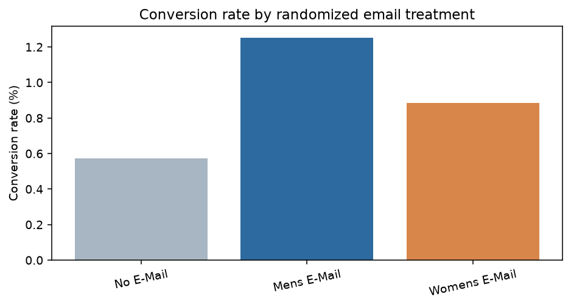

返回作品集
营销投放增量与因果分析
业务问题：邮件营销是否带来增量访问、购买和收入？是否值得扩大预算？
关键结果
- 男装邮件相对不发邮件，访问率提升 7.66 个百分点，转化率提升 0.681 个百分点，客均消费增量约 $0.772。
- 女装邮件访问率提升 4.52 个百分点，转化率提升 0.311 个百分点，客均消费增量约 $0.424。
- 在 40% 毛利率、每封邮件成本 $0.05 的情景下，两种邮件的模型增量利润均为正。
方法
随机实验 ITT、两比例比较、Welch 检验、Bootstrap 置信区间、用户分层、增量利润与 ROI 敏感性分析。

执行摘要 · 复现说明 · Python脚本 · SQL